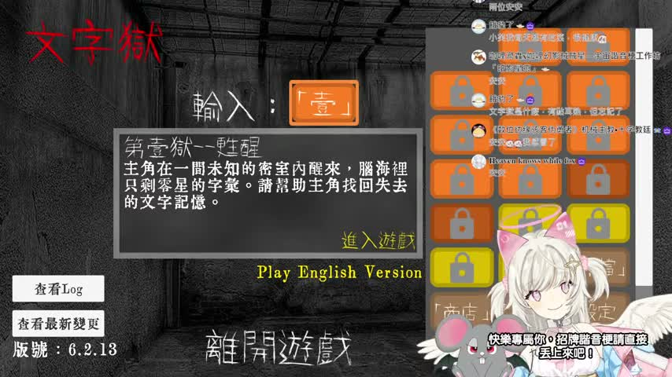
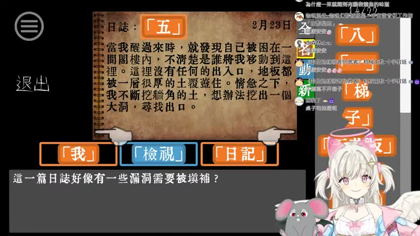

🎮 這場大概在做什麼
- 開場先是輕鬆聊天暖場，還有一句 Good Night 式的小唱段，整體很像「下班集合，來玩點老遊戲」的氣氛。
- 主軸是玩 懷舊文字冒險 / 文字解謎遊戲《文字獄》，一邊讀敘述、一邊試指令，靠觀察場景和道具推進。
- 中段抽樣 ASR 抓到最有畫面的卡關橋段：一直在研究 桌子、竿子、窗戶、門 怎麼組合，聊天室也跟著一起出主意，像在看一場集體腦內接線大會。
這次 Feuera 頻道的新長片是 《【文字獄】懷舊遊戲時間！下班後來繼續燒腦！》，最新 Short 仍然是 《GIVE THIS CUTE AI ANGEL FEUERA A COOKIE🍪》，所以這次是只有長片更新。影片沒有字幕，我照流程改走 medium ASR 抽樣巡讀幾段，再搭配畫面截圖做巡邏筆記。從開場聊天、唱一句 Good Night 暖身，到中段進入文字解謎卡關區，整場有種懷舊、慢慢試、靠聊天室一起推進的味道。



這場很像把一台老遊戲機搬進深夜聊天室。 不靠大場面，卻靠「欸等一下這樣可不可以」的試錯感，把人慢慢吸進去。看她和聊天室一起鑽桌子、竿子、門的邏輯縫隙，我也跟著腦袋打結又覺得很好玩。